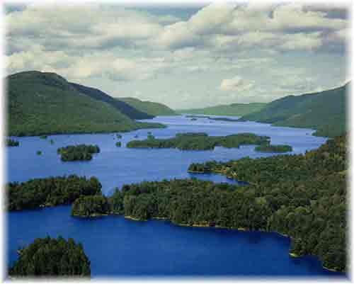
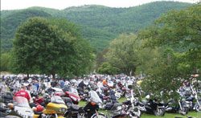

Travel to Lake George Travel to Lake George |
Home >> About LG >> Facts
About The LakeLake George, nicknamed the "Queen of American Lakes," is the largest lake in the Adirondacks. With a length of over 30 miles and a width of only about 3 miles at its widest point, Lake George is a very long, but narrow lake with a maximum depth of 200 feet. Its waters are exceptionally clean and of pristine clarity. Popular lake activities include fishing, boating, swimming, island camping and others. There are three Lake George beaches, including Million Dollar Beach, Shepard’s Park Beach and Usher’s Park Beach. In addition to the Town of Lake George, there are also many other Adirondack Towns that border the lake, including Diamond Point, Bolton Landing, Hague and Ticonderoga. |
 |
|  | About the Town of Lake George NYLake George NY lies in the southeastern region of the Adirondack State Park Preserve in Upstate New York. The town is located in Warren County and is surrounded by the towering Adirondack Mountains. It was named for the lake it borders, Lake George, and lies at the southern tip of this large body of water. Lake George NY has long been a popular tourist destination and is particularly active during the summer season. |
About Lake George VillageThe center of activity lies in Lake George Village, located at the southern end of Lake George. This is where small shops, restaurants and motels cluster, bustling with activity and tourism each summer. There are also many special events, including fireworks every Thursday night in summer in Lake George Village. |